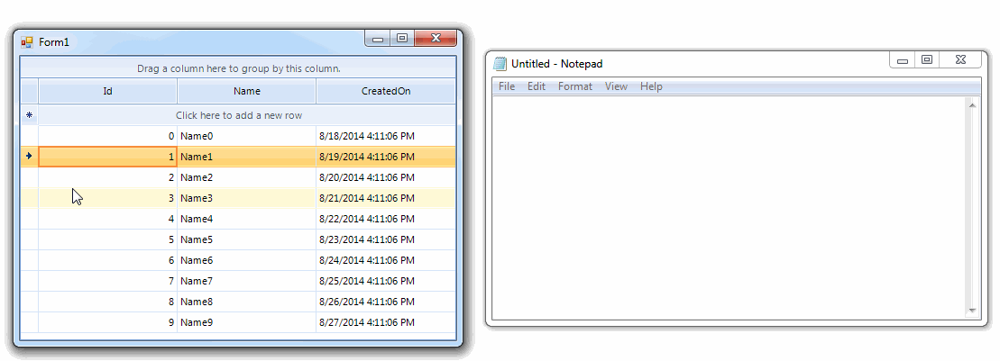

Copy/Paste
RadGridView supports built-in Copy/Paste functionality, which allows you to store text
in the Clipboard and then paste it in a different location. Using "Copy" and "Paste" gets quite useful when
you want to enter the same content repeatedly.
Copying
The copying functionality in RadGridView is controlled via the
ClipboardCopyModeClipboardCopyModehttp://www.telerik.com/help/winforms/p_telerik_wincontrols_ui_radgridview_clipboardcopymode.html
property. It has three possible values:
Disable – copying will not be permitted
EnableWithoutHeaderText – will copy the cells content, skipping any header cells data
EnableAlwaysIncludeHeaderText – will copy the cells content including the header cells data
Copying is a pretty simple operation. After cell/row is selected, right click over the data cell/row opens a context menu where the copy option exists.
After selecting it, you can paste the content anywhere you need to (in Notepad or Excel for example).

RadGridView introduces Copying event which occurs when the grid has prepared
appropriate data formats that represent the copy selection. This event is fired once for each supported format: DataFormats.Text,
DataFormats.HTML, DataFormats.CommaSeparatedValue. You can cancel this event if the data is not allowed
to be stored to Clipboard in a specific format, e.g. HTML format:
[C#]
private void radGridView1_Copying(object sender, GridViewClipboardEventArgs e)
{
if (e.Format == DataFormats.Html)
{
e.Cancel = true;
}
}
[VB.NET]
Private Sub radGridView1_Copying(sender As Object, e As GridViewClipboardEventArgs)
If e.Format = DataFormats.Html Then
e.Cancel = True
End If
End Sub
#End Region
#Region "Pasting"
Private Sub radGridView1_Pasting(sender As Object, e As GridViewClipboardEventArgs)
If Clipboard.ContainsData(DataFormats.Text) Then
Dim data As String = Clipboard.GetData(DataFormats.Text).ToString()
If data <> String.Empty Then
Clipboard.SetData(DataFormats.Text, data.ToUpper())
End If
End If
End Sub
#End Region
End Class
Pasting
The pasting functionality in RadGridView is controlled via the
ClipboardPasteModeClipboardPasteModehttp://www.telerik.com/help/winforms/p_telerik_wincontrols_ui_radgridview_clipboardpastemode.html property. It has three possible modes:
Disable – pasting is disabled
Enable – pasting is enabled
EnableWithNotifications – pasting is enabled, and the respective cell events will be triggered upon paste operation
The default context menu for data cells offers paste possibility, except when the RadGridView is read-only, disabled or the
ClipboardPasteMode property is set to GridViewClipboardPasteMode.Disable.
RadGridView.Pasting event is appropriate for modifying the Clipboard data before pasting it in the grid.
The following example demonstrates how to capitalize the copied string before inserting it in the grid:
[C#]
private void radGridView1_Pasting(object sender, GridViewClipboardEventArgs e)
{
if (Clipboard.ContainsData(DataFormats.Text))
{
string data = Clipboard.GetData(DataFormats.Text).ToString();
if (data != string.Empty)
{
Clipboard.SetData(DataFormats.Text, data.ToUpper());
}
}
}
[VB.NET]
Private Sub radGridView1_Pasting(sender As Object, e As GridViewClipboardEventArgs)
If Clipboard.ContainsData(DataFormats.Text) Then
Dim data As String = Clipboard.GetData(DataFormats.Text).ToString()
If data <> String.Empty Then
Clipboard.SetData(DataFormats.Text, data.ToUpper())
End If
End If
End Sub
#End Region
End Class
You can cancel this event as well in order to prevent pasting data in some cases.
Ctrl+C and Ctrl+V are the keys combinations, replacing Copy and Paste behavior.
If the RadGridView.MultiSelect property is set to true, it is possible to select all
the cells by pressing Ctrl+A. Afterwards, pressing Ctrl+C will copy all the cells’ content and it is ready to be pasted.